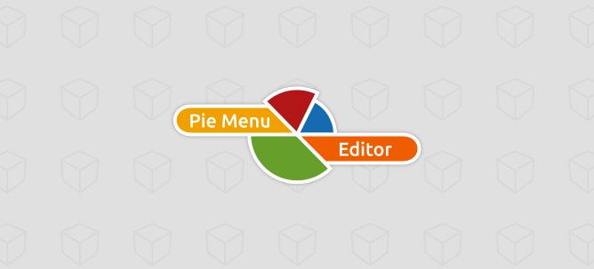

Note
This documentation is a community-maintained update of the original PME documentation.
Check Contribute to Documentation to learn how you can help improve this documentation.

Welcome to PME Documentation
Pie Menu Editor (PME) empowers you to reshape Blender’s interface to match your creative vision. Through intuitive menu creation and hotkey customization, PME turns your workflow ideas into reality.


Note
Your perfect Blender setup is just a few clicks away - no coding required. For those ready to explore Python, PME offers advanced options to extend Blender even further.
Join the Community
PME’s development and documentation thrive through community collaboration. Here’s how you can participate:
Contribute to Development
Issue Tracker: Report bugs and request features
Pull Requests: Improve code and add new features
Contribute to PME: Development participation guidelines
Improve Documentation
The Contribute to Documentation project welcomes:
Content review and proofreading
Documentation translation
Contributions to Examples & Resources
Maintenance and Support
PME was originally developed by roaoao in 2016 and is now maintained by the community. We continuously update PME to keep pace with Blender’s evolution, implementing new features and fixing bugs.
Supporting Sustainable Development
PME’s development and maintenance relies primarily on volunteer contributions. Your support through GitHub Sponsors (starting from $1/month) helps make these activities sustainable:
Compatibility updates for new Blender versions
Bug fixes and stability improvements
Documentation enhancement and translations
New feature development and UX improvements
Your support drives PME’s evolution into an even better tool.
Getting Started
Editors
Reference
Support & Community
- FAQ
- Known Issues
- Get Support
- Contribute to PME
- Change Log
- 1.18.8 (2023.01.??)
- 1.18.7 (2023.04.11)
- 1.18.6 (2022.08.13)
- 1.18.5 (2022.05.02)
- 1.18.4 (2021.11.11)
- 1.18.3 (2021.06.28)
- 1.18.2 (2021.04.24)
- 1.18.1 (2021.03.12)
- 1.18.0 (2020.10.30)
- 1.17.5 (2020.09.23)
- 1.17.3 (2020.07.20)
- 1.17.2 (2020.05.12)
- 1.17.1 (2020.04.27)
- 1.17.0 (2020.03.27)
- 1.16.4 (2019.10.13)
- 1.16.2 (2019.09.21)
- 1.16.0 (2019.08.09)
- 1.15.23 (2019.06.26)
- 1.15.22 (2019.06.09)
- 1.15.21 (2019.06.04)
- 1.15.20 (2019.04.11)
- 1.15.19 (2019.03.25)
- 1.15.18 fix 1 (2019.03.24)
- 1.15.18 (2019.03.21)
- 1.15.17 (2019.03.12)
- 1.15.16 fix 1 (2019.03.07)
- 1.15.16 (2019.02.14)
- 1.15.15 (2019.02.13)
- 1.15.14 (2019.01.21)
- 1.15.13 fix 1 (2019.01.15)
- 1.15.13 (2019.01.14)
- 1.15.12 fix 2 (2019.01.11)
- 1.15.12 (2019.01.07)
- 1.15.11 fix 7 (2019.01.05)
- 1.15.11 fix 4 (2018.12.28)
- 1.15.11 fix 3 (2018.12.28)
- 1.15.11 (2018.12.23)
- 1.15.10 fix 1 (2018.12.15)
- 1.15.10 (2018.12.10)
- 1.15.9 (2018.12.10)
- 1.15.8 fix 3 (2018.12.06)
- 1.15.8 fix 3 (2018.12.04)
- 1.15.8 (2018.12.03)
- 1.15.7 fix 3 (2018.11.20)
- 1.15.7 (2018.11.08)
- 1.15.6 (2018.10.10)
- 1.15.5 (2018.09.13)
- 1.15.4 (2018.08.27)
- 1.15.3 (2018.06.25)
- 1.15.2 (2018.05.16)
- 1.15.1 (2018.05.09)
- 1.15.0 (2018.05.08)
- 1.14.15 (2018.04.06)
- 1.14.13 (2018.02.14)
- 1.14.9 (2017.10.24)
- 1.14.7 (2017.10.15)
- 1.14.6 (2017.10.07)
- 1.14.3 (2017.09.27)
- 1.14.2 (2017.09.22)
- 1.14.1 (2017.09.19)
- 1.14.0 (2017.09.17)
- 1.13.6 (2017.06.10)
- 1.13.4 (2017.04.09)
- 1.13.1 (2017.02.23)
- 1.13.0 (2017.02.19)
- 1.12.1 (2016.12.12)
- 1.11.4 (2016.11.13)
- 1.10.1 (2016.07.30)
- 1.9.2 (2016.05.17)
- 1.8.3 (2016.04.08)
- 1.7.0 (2016.02.16)
- 1.6.0 (2016.01.19)
- 1.5.2 (2016.01.11)
- 1.4.1 (2015.12.09)
- 1.3.0 (2015.11.28)
- 1.2.0 (2015.10.26)
- 1.1.5 (2015.10.15)